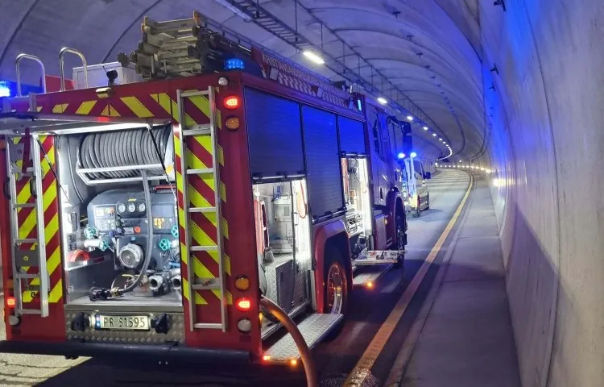

Forside/Fakta
Fakta om E18
Tallene bak Norges største veiprosjekt: 38,3 kilometer firefelts motorvei mellom Grimstad og Kristiansand.
| Lengde | 38,3 km firefelts motorvei |
|---|---|
| Bruer | 61 |
| Tunneler | 8 |
| Toplanskryss | 11 |
| Lokal- og tilførselsveger | 75 km |
| Lysmaster | 1300 |
| Færre ulykker | 90 prosent |
| Reisetid | 15 minutter raskere |
| Åpnet | August 2009 |
Tallene er hentet fra agderops.no.
Bygging
Bygging av veien
Veien ble bygget som et OPS-prosjekt, med ansvar for både bygging, drift og vedlikehold over tid.
- Firefelts motorvei.
- 61 bruer og 8 tunneler.
- 11 toplanskryss.

Vil dere vite mer om veien?
Ta kontakt, så peker vi videre.